Transfer
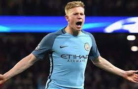
Kevin De Bruyne
Kevin De Bruyne is a Belgian professional footballer who plays as a midfielder for Premier League club Manchester City.
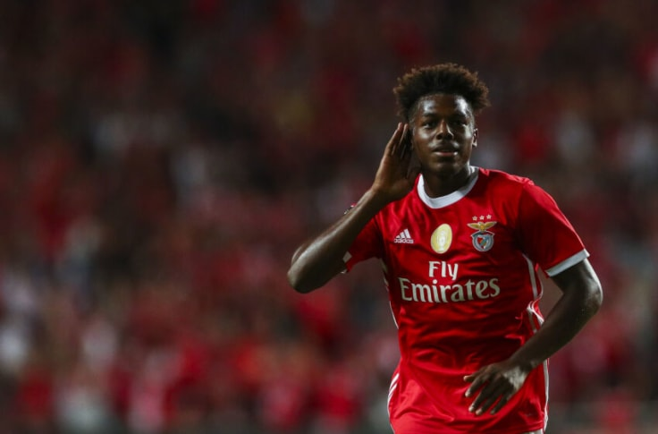
Nuno Tavares
The Portuguese left-back has arrived from Benfica, having produced seven assists in 41 appearances across all competitions for the club.

Son Heung-min
The north London club start their campaign at home to champions Manchester City, while they also face Chelsea and Arsenal in the first six Gameweeks.
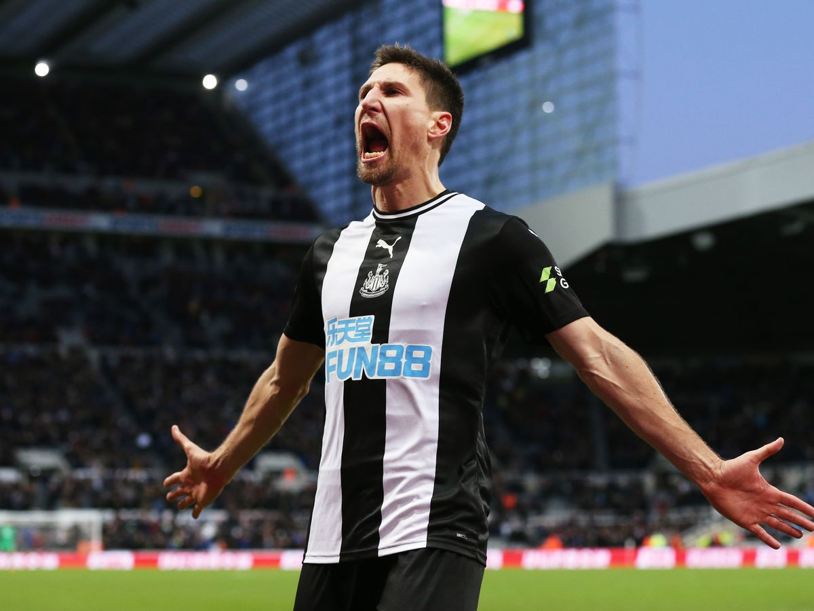
Federico Fernandez
Federico Fernández is an Argentine professional footballer who plays as a centre-back for Premier League club Newcastle United.
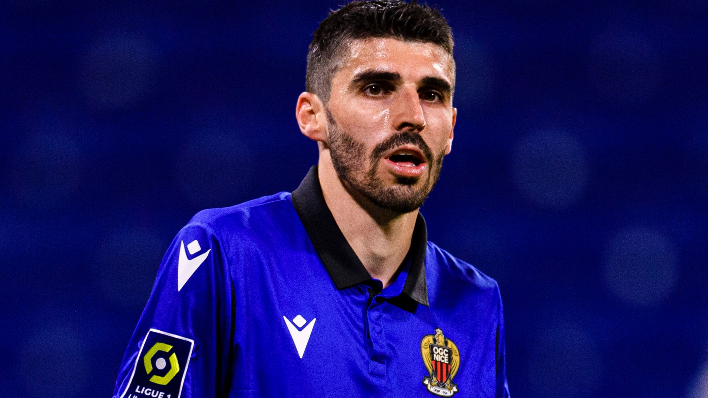
Pierre Lees-Melou
Pierre Lees-Melou is a French professional footballer who currently plays for Premier League side Norwich City as an attacking midfielder.
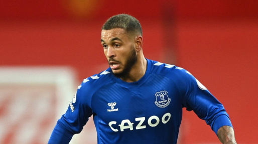
Joshua King
Joshua Christian Kojo King is a Norwegian professional footballer who plays as a forward for Premier League club Watford and the Norway national team.
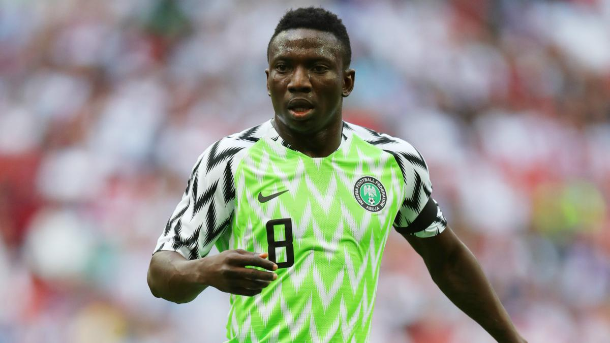
Peter Etebo
Oghenekaro Peter Etebo is a Nigerian professional footballer who plays as a midfielder for Watford on loan from Stoke City and the Nigerian national team.
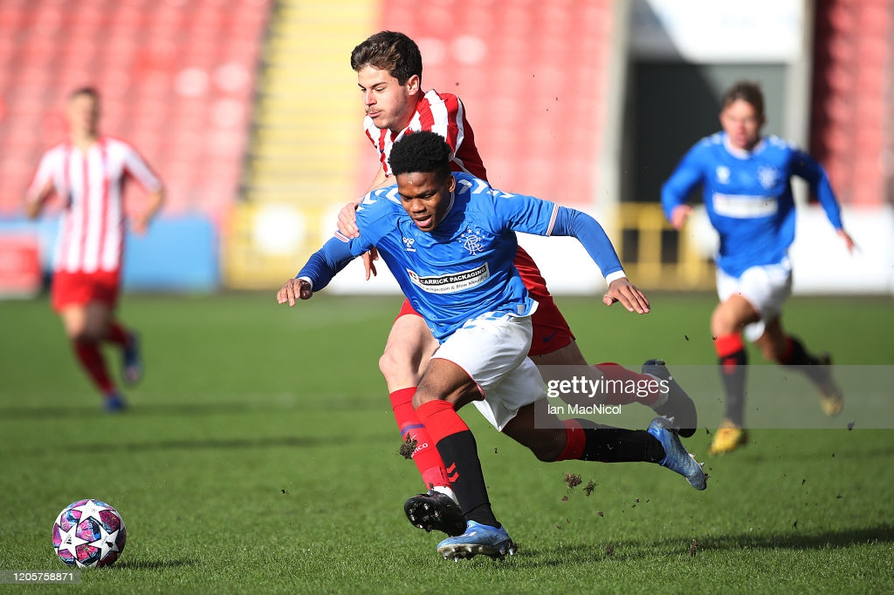
Adedapo Awokoya-Mebude
Adedapo Awokoya-Mebude is a Scottish professional footballer who plays as a striker for Watford.
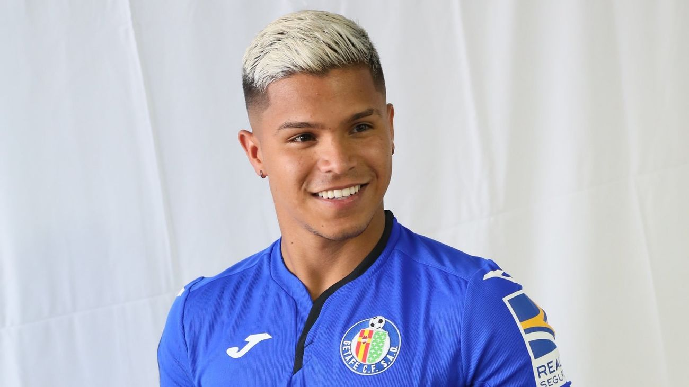
Cucho Hernandez
Juan Camilo "Cucho" Hernández Suárez is a Colombian footballer who plays for Watford. Mainly a striker, he can also play as a winger.
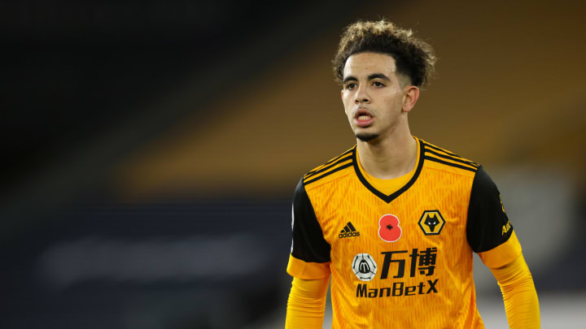
Rayan Ait Nouri
Rayan Aït-Nouri is a French professional footballer who plays as a left-back for Premier League club Wolverhampton Wanderers.
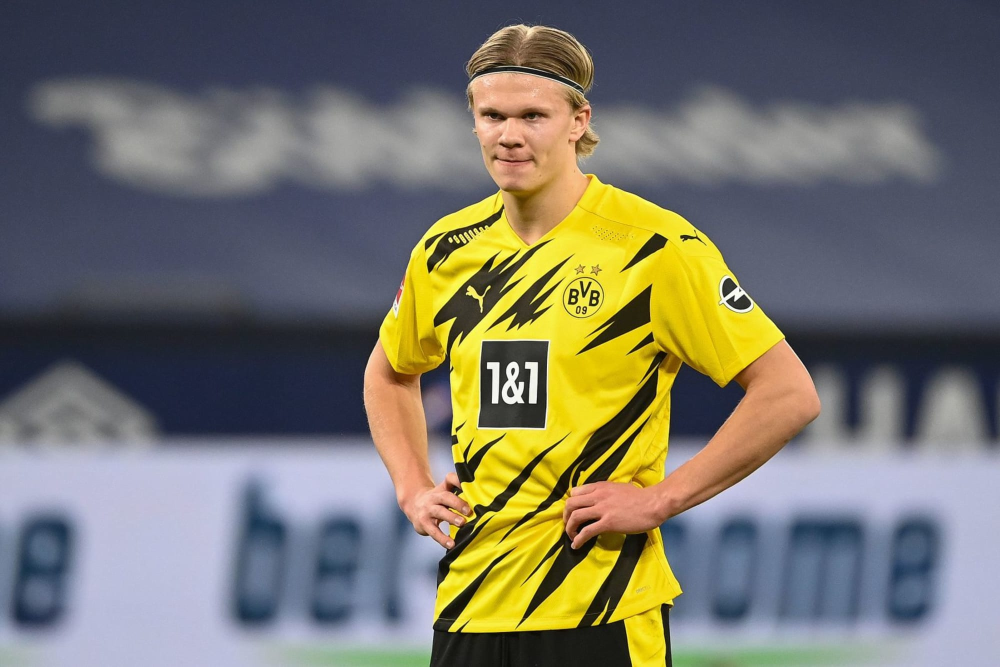
Erling Haaland
Erling Braut Haaland is a Norwegian professional footballer who plays as a striker for Bundesliga club Borussia Dortmund and the Norway national team.
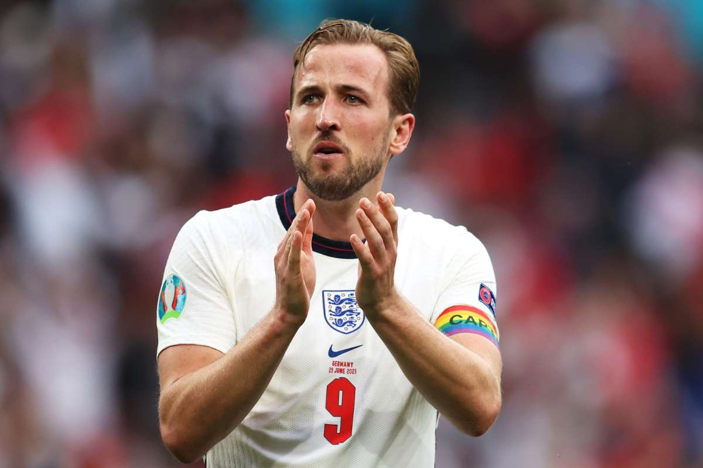
Harry Kane
Harry Edward Kane MBE is an English professional footballer who plays as a striker for Premier League club Tottenham Hotspur and captains the England national team.
| Player | Club | Position | Price |
|---|---|---|---|
| Nuno Tavares | ARS | DEF | £4.5m |
| Federico Fernandez | NEW | DEF | £4.5m |
| Pierre Lees-Melou | NOR | MID | £5.0m |
| Joshua King | WAT | FWD | £5.5m |
| Peter Etebo | WAT | MID | £4.5m |
| Adedapo Awokoya-Mebude | WAT | FWD | £4.5m |
| Cucho Hernandez | WAT | FWD | £5.0m |
| Rayan Ait Nouri | WOL | DEF | £4.5m |
Latest News
Feature
Club Step Up Pre-Season Preparation
Read MoreNews